Creating a Native Plugin
This page gives an introduction to creating native plugins.
Environment Setup
The instructions here are tailored for Visual Studio 2017 onwards, for C/C++ development using the SDK library. There may be some differences in earlier versions of Visual Studio (specifically around project generation). There is also an example CMake script, which can be used as a convenient alternative to manual Visual Studio project setup, if desired.
Start a new DLL project 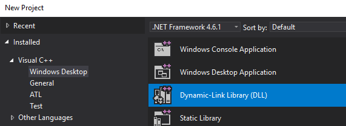
Open the Configuration Manager 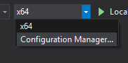
Edit the Active Solution Platforms 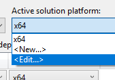
Remove the x86 platform 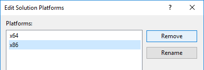
Open the project properties 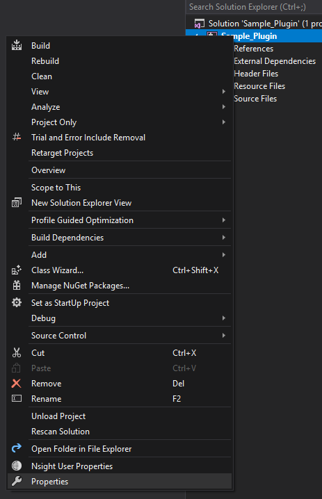
Add C++ Include directory for installed SDK e.g. C:\Virtalis\Visionary Render 2.1\data\vrtreesdk\include or C:\Virtalis\GeoVisionary 3.1.1\data\vrtreesdk\include
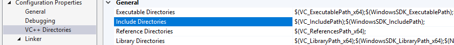
Add Additional Library Directory for installed SDK e.g. C:\Virtalis\Visionary Render 2.1\data\vrtreesdk\lib\x64 or C:\Virtalis\GeoVisionary 3.1.1\data\vrtreesdk\lib\x64
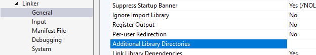
Add vrtree-linker.lib For Debug configuration:
For Release configuration:
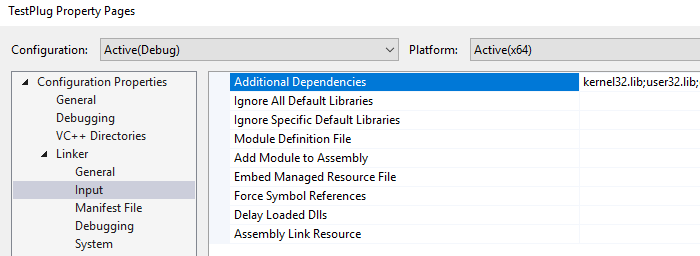
Add a cpp file (e.g. main.cpp) 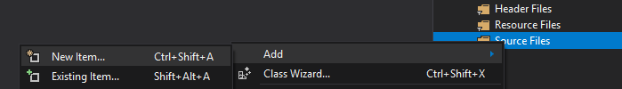
CMakeLists
For CMake users, this project setup can be automated with the following:
# Set the minimum required version of CMake for this project and update the policy settings.
cmake_minimum_required(VERSION 2.8.11)
# Store the path to the VRTree SDK in the VRTREE_SDK_DIR variable.
set(VRTREE_SDK_DIR "" CACHE STRING "Location of the VRTree SDK")
# Set the name of this project and store it in the PROJECT_NAME variable.
project(my_plugin)
# Search the VRTree SDK for include files and libraries.
include_directories(${VRTREE_SDK_DIR}/include)
link_directories(${VRTREE_SDK_DIR}/lib/x64)
# Add a library using the specified source files.
add_library(my_plugin SHARED main.cpp)
# Add the vrtree-linker library as a dependency.
target_link_libraries(my_plugin vrtree-linker)
Plugin Interface
A native plugin requires a minimum set of entry points in order to be loadable by the plugin manager:
All of these exports should use the cdecl calling convention.
C / C++ Plugins
The helper library is called vrtree-linker and also provides helper macros for implementing plugin entry points.
The following boilerplate code can be used to compile a native plugin starting point. This example makes use of the VRPLUGIN_API_IMPL macro, which handles the boilerplate for hooking into the application log functions and other utilities detailed here.
#include <vrtree_api.h>
// Implement all of the standard API functions for api versioning,
// and other hooks such as logging and progress displays.
VRPLUGIN_API_IMPL;
PLUGIN_ENTRY_POINT const char* VRTREE_APIENTRY VRPName()
{
// Return the name of the plugin.
return "My Plugin";
}
PLUGIN_ENTRY_POINT const char* VRTREE_APIENTRY VRPVersion()
{
// Return the version number of the plugin.
return "1.0.0";
}
// Implement VRPInit to respond to application startup.
PLUGIN_ENTRY_POINT int VRTREE_APIENTRY VRPInit()
{
// Query the vrtree DLL for API entry points and load them. Note that a valid API license is required (see licensing section below).
VRPLUGIN_LOADVRTREE;
// Before using any of the hooks such as s_logFunc, check that they were loaded.
if (s_logFunc) {
s_logFunc(LOG_INFO, "Hello World!");
}
return 0;
}
// Implement VRPCleanup to respond to unloading of the plugin.
PLUGIN_ENTRY_POINT int VRTREE_APIENTRY VRPCleanup()
{
return 0;
}
The
VRInit function is called when the plugin is loaded. The
VRPCleanup function is called when the plugin is unloaded. It is important that the cleanup function correctly removes things added by the plugin. For more information see
Enabling/Disabling Plugins at Runtime.
Loading a Plugin
To instruct the application to load this plugin, do the following:
Find your documents directory. For normal Visionary Render installations, this will usually be Documents/VisionaryRender. For side-by-side installations, it will include the version (e.g. Documents/VisionaryRender-2.1.0);
Inside this directory, create a plugins directory if it does not already exist;
Inside the plugins directory, create a directory named after your plugin. For the above example, call it My_Plugin;
Copy your compiled plugin (e.g. My_Plugin.dll) into this new directory;
In the same directory, next to the dll, create a plugin.txt file;
Open this file in a text editor, and enter your plugin dll file name (e.g. My_Plugin.dll) and save the file.
For the above example, the final directory structure should look something like this:
For more information about other locations where plugins may be located, see Plugin Search Paths.
Verifying a plugin has loaded
Once the plugin is in this location, launch Visionary Render.
Open the settings window (F6), and select the "Plugins" category.
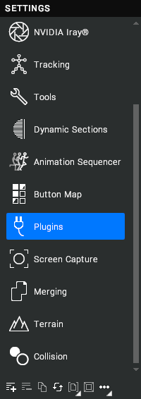
The table displays all loaded plugins and the "My Plugin" plugin should be visible here.
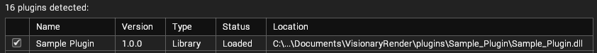
You may also open the Diagnostics window and go to the Log tab. You should also be able to see the "Hello World" log message here.
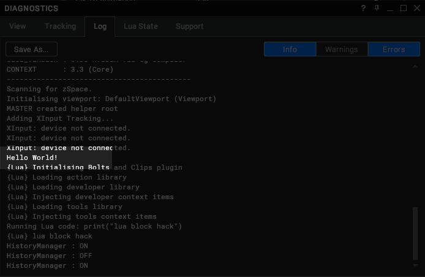
Licensing a Plugin
While Visionary Render can load native plugins freely, in order to perform useful operations in the application, it must be granted access to the VRTree API. To do this, it must export a VRPSignature function, providing a license string to unlock the API.
The licenses are issued by Virtalis in the same way as a regular application license, except the contents of the text file are compiled into the plugin.
There are multiple licensing options.
Licensing Options
Local Machine - Tied to a MAC address, this license allows the plugin to access the API only when running on the specific machine it is licensed for. This is generally used for plugin development.
Site Wide - Tied to a site license server, this license allows the plugin to access the API when running on any machine connected to a license server providing the site license.
To get your API licenses, please contact licensing@virtalis.com
Implementation
Once you are given a license text file, it needs to be compiled into the plugin in order to be detected by the plugin loader. Copy the entire contents of the text file into the source code, including the trailing signature (not shown below due to size).
PLUGIN_ENTRY_POINT const char* VRTREE_APIENTRY VRPSignature()
{
return "<VRTREE_API><company>Virtalis</company><user>j.barrett</user><feature>Development</feature></VRTREE_API>";
}
Other Languages
It is possible to develop a plugin for Visionary Render using any language that allows you to compile to a dynamically-loadable DLL exporting these entry points. In this case there are no helpers available so you will have to have your plugin dynamically load vrtree.dll and query the entry points specifically. This is covered by Accessing the API